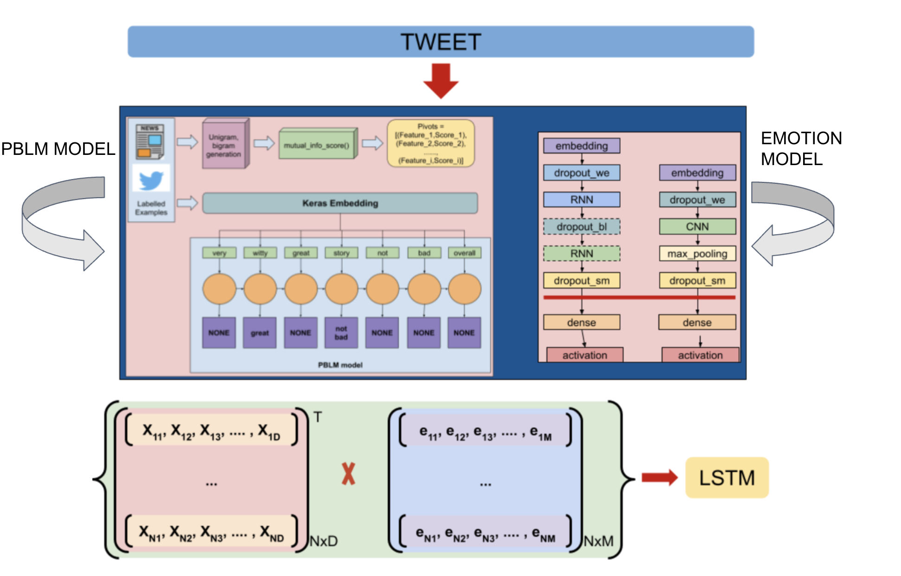
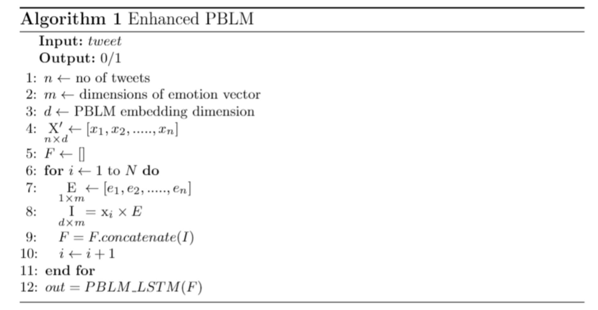
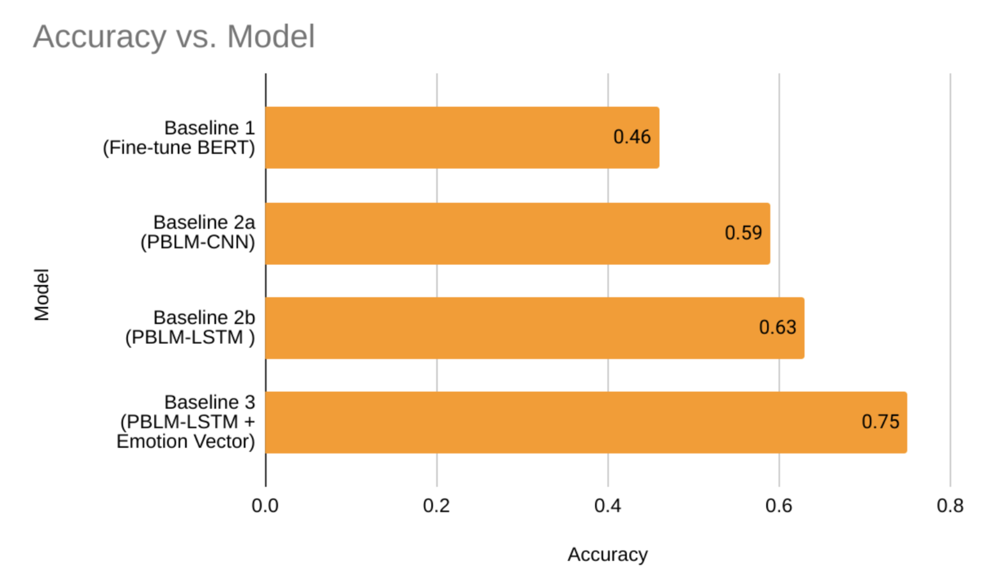

Our research paper "Emotion Enhanced Domain Adaptation for Propaganda Detection in Indian Social Media"
has been accepted at the 2nd International Conference on Innovations in Computational Intelligence and Computer Vision (ICICV-2021) conference and will be published in the Springer’s book “Advances in Intelligent Systems and Computing”. The conference had an acceptance rate of 13.75%. The paper was
also bestowed with the best paper award at the conference. I will update the blog as soon the paper is made available online.
In this blog, I will be attempting to explain my research on textual propaganda on social media. For the readers who are just interested in the project, scroll down to the Research section.
Lastly this feat would not be possible without my co-authors Malavikka Rajmohan and Akanksha P. Reddy, under the relentless guidance of Dr. Bhaskarjyoti Das and the support from PES University, Bangalore.
Introduction
Shankar is a staunch supporter of the Bharatiya Janata Party (BJP). He whole-heartedly believes BJP is the better party than the other runners. He also calls himself a Modi-Bhakth, truly believing PM Modi's decision making and actions are in the best
interests of the country. So is Shankar a propagandist? No. Could his views be derived from a propagandist, who's sole purpose is to impose their perspective down the public's ideals, and to forment outrage in a community? Possibly.
Propaganda largely depends on the spread of the "word", rather than just the "word".
This is why propaganda is such a devious topic to research upon, as polarity is all about an individual's perspective, hence there could never be a right or a wrong viewpoint.
Fake News, Rumours and Propaganda
Propaganda is often conflated with terms like fake news and rumours. Let us attempt to understand these terms with the following examples.
"Rahul married Sunita in Bangalore yesterday", is the word going around the village of Udupi, although Rahul has been married to Roshini since 3 years. Mayank knew about Rahul's marraige, but went on to denigrate his name. Now this is a Fake News.
"Rahul married Sunita in Bangalore yesterday", is the word going around the village of Udupi, but this time Mayank does not even know who Rahul is. He just spreads the word for the sake of it, causing a lot of confusion in the village. Now this is a Rumour.
"Rahul is a hypocrite for divorcing Roshini" is the word going around the village of Udupi. Mayank knows the reason for the divorce, as Roshini was having an affair and Rahul was forced into the divorce. But Mayank is Roshini's good friend, therefore was
going to support her, irrespective for her ill-doings. So he is trying really hard push this perspective of his, onto the gullible villagers. Now this is what is termed Propaganda.
So propaganda can be defined as an opinion or specific actions by an individual/group; objective of influencing those of other groups or individuals".
Computational Propaganda
For almost a century, propaganda has existed in many forms. With the progress of science and technology, as well as the growing popularity of social media, propagandists are increasingly using these platforms to sway others with their own views. This is becoming a significant
issue as social media platforms are increasingly being used to nurture a group of individuals rather than serving their intended function. As a result, detecting and eliminating misinformation on social media is critical.
With the rise in popularity of social media sites like Twitter, propaganda has become computational. Propaganda always has an end-goal and in today's environment, propagandists are attempting to reach that aim using computational techniques. ropaganda can have a traceable source
and be positive (white), fake news from unreliable sources (black), or anything in between, where source may be recognised but information is incorrect (gray). Disinformation is, in fact, employed as part of a propaganda operation.
Novelty
There has been handful of research done to detect propaganda, textual and semantics based. But we realised emotions were never considered as factor for propaganda detection, which we thought was imperitive to get more accurate results. Therefore we have employed a transfer learning
method called domain adaptation. Domain adaptation is the ability to apply an algorithm trained in a "source domain" to a different "target domain". We have also incorporated emotions vectors as a dimension into our model.
Research
Dataset
Source Dataset - A labelled dataset of news articles from SemEval 2020’s open shared task - Detection of
Propaganda in new articles was used.The creators of the task compiled a corpus of about
464 news articles in which fragments containing one out of 18 propaganda techniques
were annotated.
Target Dataset - A dataset of 597 tweets were scraped on the chosen topic. Based on the background
research, 8 highly propagandistic and 2 relatively neutral hashtags were identified. For
each hashtag, tweets with appropriate tweet IDs were collected using Twitter APIs. The
tweets were then manually annotated with reference to the 18 well documented propaganda techniques,
and after this process, 462 propagandistic and 135 non-propagandistic tweets were collected.
Pre-processing
The model utilises the information from its labelled data at the sentence level to classify
the unlabelled data. The following procedures were followed for the source and target:
Source Data Preparation - Each sentence of the 464 labelled articles was checked for the presence of a
propagandistic span and written into two separate parsed XML files, each containing
propagandistic and non-propagandistic sentences respectively.
Target Data Preparation - Tweets consist of hashtags, urls, usernames and emojis. The emojis were converted to
text and the contents of the hashtags were stored. The 597 manually annotated tweets
were then separated out into two files as mentioned above and the remaining unlabelled
tweets were written into another file.
Baselines
We worked on three different models, each built on each other. Therefore I will briefly be explaining Baseline 1 and Baseline 2, and expounding on the details of Baseline3.
Baseline 1 - The first baseline was a model that identified propagandistic spans in a phrase using a single multilabel token classification head and a
highly adjusted BERT-base uncased model trained on the SEMEVAL dataset. The token classifier is created by adding a linear classification head to BERT's final layer. The BERT model
used had 12 transformer layers with 110 million trained parameters, including batch-size 64, sequence-length 210, early stopping on F1 score on the validation set with a patience value
of 7, 0.01 as weight decay, and Adam optimizer with a learning rate of 3e-5 as hyper-parameters on the validation set. The model was evaluated on unlabeled tweets after being trained for 20 epochs.
Baseline 2 - The Pivot Based Language Model (PBLM) is a domain adaptation via representation learning (DRel) approach in which the source and destination learn a structure-aware shared representation.
A sequential neural network (LSTM) was employed in the model, which produced a context-dependent vector for each input word. For each tweet, the first phase entailed taking the tagged occurrences and creating
unigram and bigram characteristics. The MI score was then computed, which represented the relevance of a feature to a certain label as a tuple of feature and score.
The second phase included altering the usual
LSTM training method to get the shared representation by only predicting the following word if it was a pivot (as generated from the previous phase). The third step trained the classifier by progressively stacking
the previously trained PBLM model without the softmax layer (containing the structural aware representation) with a CNN and an LSTM, and recording the accuracies of both against the manually annotated tweets.
Baseline 3 - The Enhanced PBLM model aims to bring the two baselines together to see the
improvement in the performance. This baseline additionally used the emotion footprint as a feature, which was based on Ekman's concept of six fundamental emotions: Anger, Disgust, Fear, Joy, Sadness, and Surprise.
The embedding obtained during the PBLM training phase was multiplied by the relevant emotion vector for each tweet. Matrix multiplication is used to prevent a sparse matrix and to emphasise the emotion signals.
For text classification, the resulting vector is input into an LSTM layer and then passed through a dense layer with a sigmoid activation.

Diagram representation of the workflow of enhanced PBLM (Baseline 3)
This is the algorithm we developed for the enhanced PBLM -

Algorithm of enhanced PBLM
Results

Accuracies of the baseline models
From the obtained values, we see that transferring features learnt from structured text like
news articles does not perform well on a dataset which has a completely different
distribution of words, such as in twitter. Thus, baseline 1 does not perform very well on the
target dataset having obtained an accuracy of 0.46.
From baseline 2, we see that within domain adaptation, PBLM-LSTM classifier performs
better than PBLM-CNN by obtaining an accuracy of 0.63 as compared to the latter with
0.59 accuracy. Thus, we use the PBLM-LSTM for our enhanced model.
Finally, baseline 3 gives an accuracy of 0.75, which proves that adding emotions as a feature can
improve the overall performance of a propaganda detection model.
Conclusion
Now that we have detected the propaganda, what about the mastermind behind all this, the propagandist?
Our current research is to get to the source, the propagandists who are the main cause of this dissemination, by using social network
analysis (SNA) techniques. We plan on building a retweet graph and use GCN to generate node embeddings and hopefully detect the propagandist.